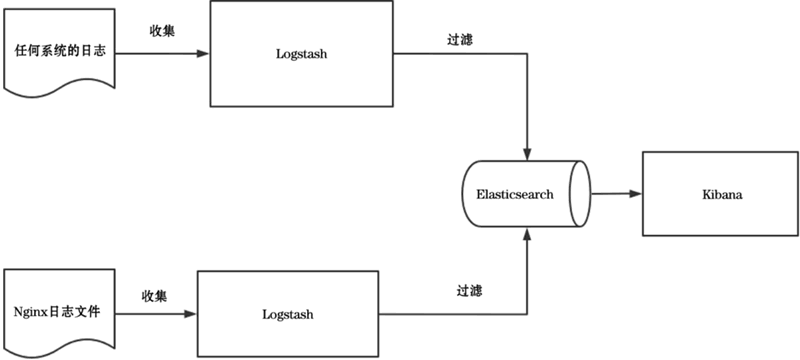
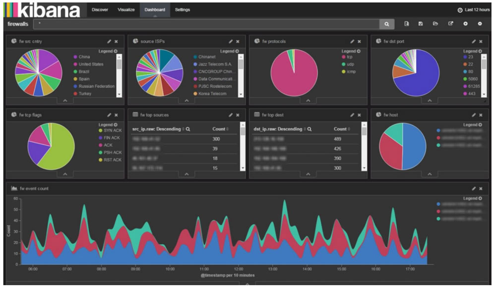
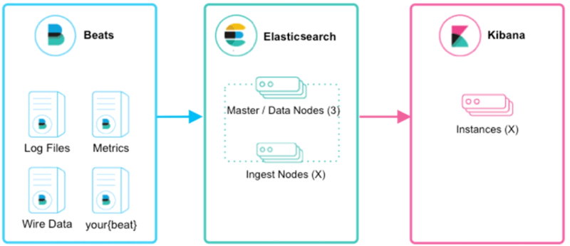
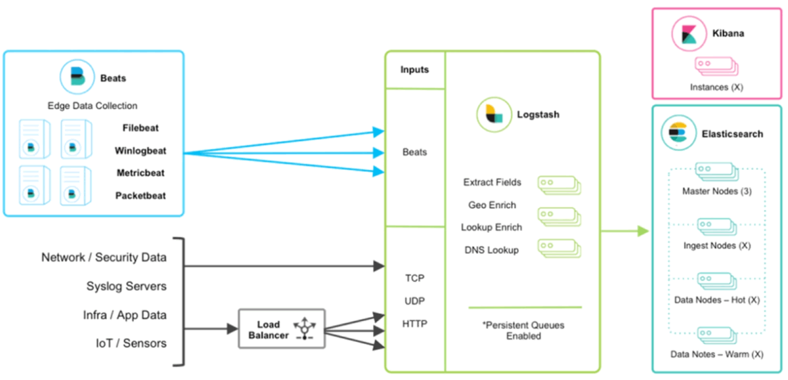
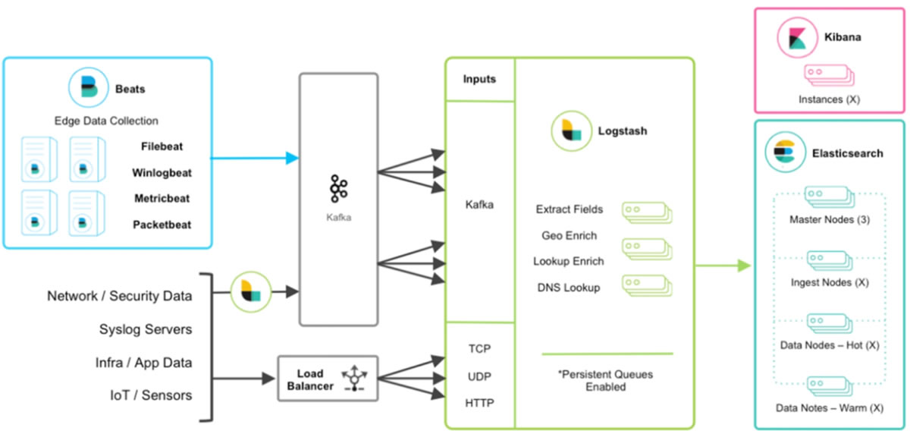

首页 > 编程笔记
Elasticsearch介绍（非常详细）
Elasticsearch（简称 ES）是一个开源的、高扩展的、分布式的、提供多用户能力的全文搜索引擎，也是一个基于 Lucene 搜索的服务器，可以近乎实时地存储和搜索数据。
在云计算环境中，Elasticsearch 能够达到数据的实时搜索，而且性能非常稳定，安装与使用也非常便捷。Elasticsearch 在 Java、.NET、PHP、Python、Apache Groovy、Ruby 等程序设计语言中都可以使用。根据 DB-Engines 的排名，Elasticsearch 是非常受欢迎的企业搜索引擎之一。
Elasticsearch 能很方便地用于对大量数据进行搜索和分析，充分利用 Elasticsearch 的水平伸缩性，能够使数据在生产环境中变得更富有价值。
如下图所示，是 Elasticsearch 官网列出的用户，有大量网站和企业在使用 Elasticsearch。
图 1 Elasticsearch的用户
下面列出一些企业的使用场景。
下面是 Elasticsearch 与 Solr 的一些区别：
Elasticsearch 的主要应用场景如下：
Elasticsearch 是与 Logstash（数据收集和日志解析引擎）和 Kibana（数据分析和可视化平台）一起开发的，这 3 个产品被设计成一个集成的解决方案（ELK），被广泛运用于大数据近实时分析领域，包括日志分析、指标监控、信息安全等。它可以帮助用户搜索海量的结构化数据和非结构化数据，可按照需求创建可视化的报表，还可以通过机器学习自动识别异常状况并告知用户。如下图所示为 ELK 架构流程图。
其中 Logstash 可以通过相应的配置收集各式各样的数据，比如系统 App 的日志，而且日志格式没有限制（如 TXT、CSV、JSON 等），还可以收集数据库数据（如 MySQL、Oracle、SQL Server 等规范的数据）。用户只需简单地配置就能快速收集这些数据，然后过滤数据，把过滤后的数据存储在 Elasticsearch 中，最后利用界面化工具 Kibana 生成业务需要的各式各样的报表。
如下图所示为利用 Kibana 和 Elasticsearch 生成的数据面板：
Elasticsearch 除了和 Kibana 结合之外，还可以单独使用来实现数据库存储并且对数据进行全文搜索。下面就来学习与 Elasticsearch 相关的产品以及各种产品相结合的解决方案。
Logstash 具有如下特点：
Elasticsearch 的实现主要分为以下几个步骤：
Kibana 具有高可扩展的用户界面，能够全方位地管理 Elasticsearch 中的数据。Kibana 最早的时候是基于 Logstash 创建的工具，具有如下特点：
Beats 具有如下几个特征：
Beats 进行数据采集后，将数据存储在 Elasticsearch 中，然后通过 Kibana 进行可视化的展示。
该方案在图 4 的框架基础上引入了 Logstash，引入 Logstash 为业务框架带来许多好处，比如 Logstash 具有基于磁盘的自适应缓冲系统，该系统在很大程度上提高了数据读写的吞吐量，还可以从其他数据源中提取数据，并且支持 TCP、UDP、HTTP 等数据传输协议。
Beats 结合 Logstash 带来的优势如下：
用户可以在 Beats 和 Logstash 中间添加诸如 Redis、Kafka、RabbitMQ 等中间件。添加中间件会给系统架构带来许多好处，比如，当有很多台机器需要进行日志收集时，让每台机器都向 Elasticsearch 中持续写入数据，必然会对 Elasticsearch 造成压力，因此需要对数据进行缓冲。使用 Redis、Kafka、RabbitMQ 等中间件可以在数据写入时起到缓冲作用，并且能够在一定程度上保护数据不丢失。
在云计算环境中，Elasticsearch 能够达到数据的实时搜索，而且性能非常稳定，安装与使用也非常便捷。Elasticsearch 在 Java、.NET、PHP、Python、Apache Groovy、Ruby 等程序设计语言中都可以使用。根据 DB-Engines 的排名，Elasticsearch 是非常受欢迎的企业搜索引擎之一。
Elasticsearch 能很方便地用于对大量数据进行搜索和分析，充分利用 Elasticsearch 的水平伸缩性，能够使数据在生产环境中变得更富有价值。
如下图所示，是 Elasticsearch 官网列出的用户，有大量网站和企业在使用 Elasticsearch。
图 1 Elasticsearch的用户
下面列出一些企业的使用场景。
- Wikipedia 使用 Elasticsearch 提供全文搜索（以高亮显示搜索到的片段），还有 search-as-you-type 和 did-you-mean 的全文搜索功能。
- 卫报使用 Elasticsearch 将网络社交数据结合到访客日志中，把公众对新文章的实时反馈提供给编辑。
- Stack Overflow 将地理位置的查询融入全文搜索中，并且使用 more-like-this 接口查找相关的问题和回答。
- GitHub 使用 Elasticsearch 对 1300 亿行代码进行查询。
Elasticsearch与Solr比较
当我们谈及 Elasticsearch 的时候，必然会想起 Solr。下面是 Elasticsearch 与 Solr 的一些区别：
- Elasticsearch 部署和安装简单，并自带分布式协调管理功能；而 Solr 需要依赖 ZooKeeper 进行分布式协调管理。
- Elasticsearch 基本是开箱即用，解压之后就可以使用；相对而言，Solr 使用难度较大。
- Solr 支持多种数据格式的文件，比如 JSON、XML、CSV 等；而 Elasticsearch 仅仅支持 JSON 数据格式的文件。
- Solr 数据搜索的速度快，但是数据插入和数据删除的速度都比较慢，它主要用于电商平台和数据搜索多的应用；而 Elasticsearch 创建索引（数据插入）和数据搜索的速度都比较快。
- Solr 是传统的搜索应用方案；而 Elasticsearch 更适用于新兴的近实时搜索。
- Solr 提供的功能繁杂；而 Elasticsearch 注重核心功能，高级功能大多数由第三方插件提供，例如图形化界面需要 Kibana 来支撑。
为什么要学习Elasticsearch
学习 Elasticsearch 的好处如下：- 在当前的软件行业中，搜索功能是软件系统或平台的基本功能，Elasticsearch 可为相应的软件打造良好的搜索体验。
- Elasticsearch 具备非常强大的数据分析能力。虽然 Hadoop 也可以进行大数据分析，但是没有 Elasticsearch 这样强大的分析能力。
- Elasticsearch 使用方便，既可以将其安装在 PC 上，又可以部署在生产环境中。
- 国内比较大的互联网公司都在使用 Elasticsearch。另外，在腾讯和阿里的云平台（腾讯云和阿里云）上也有相应的 Elasticsearch 云产品可供使用。
- 在当今的大数据时代，具备了近实时的搜索和分析能力，企业才能拥有核心的竞争力，才能洞见未来。
Elasticsearch的主要功能及应用场景
Elasticsearch 主要具有如下功能：- 海量数据的分布式存储以及集群管理，能达到服务与数据的高可用以及系统架构的水平扩展。
- 近实时的数据搜索能力，能够对结构化数据、全文数据、地理位置等类型的数据进行处理和分析。
- 海量数据的实时分析功能和各种强大的聚合功能。
Elasticsearch 的主要应用场景如下：
- 网站搜索、代码搜索等。
- 日志管理、日志分析、日志安全指标监控、应用性能监控、Web 抓取舆情分析等。
- 利用 Elasticsearch 的高性能和分布式部署特征，可以对海量的业务订单数据进行分析和处理，还能利用 Elasticsearch 的聚合函数和分析能力统计出各种各样的数据报表。
Elasticsearch 是与 Logstash（数据收集和日志解析引擎）和 Kibana（数据分析和可视化平台）一起开发的，这 3 个产品被设计成一个集成的解决方案（ELK），被广泛运用于大数据近实时分析领域，包括日志分析、指标监控、信息安全等。它可以帮助用户搜索海量的结构化数据和非结构化数据，可按照需求创建可视化的报表，还可以通过机器学习自动识别异常状况并告知用户。如下图所示为 ELK 架构流程图。

图 2 ELK架构流程图
图 2 ELK架构流程图
其中 Logstash 可以通过相应的配置收集各式各样的数据，比如系统 App 的日志，而且日志格式没有限制（如 TXT、CSV、JSON 等），还可以收集数据库数据（如 MySQL、Oracle、SQL Server 等规范的数据）。用户只需简单地配置就能快速收集这些数据，然后过滤数据，把过滤后的数据存储在 Elasticsearch 中，最后利用界面化工具 Kibana 生成业务需要的各式各样的报表。
如下图所示为利用 Kibana 和 Elasticsearch 生成的数据面板：

图 3 Kibana生成的数据面板
图 3 Kibana生成的数据面板
Elasticsearch 除了和 Kibana 结合之外，还可以单独使用来实现数据库存储并且对数据进行全文搜索。下面就来学习与 Elasticsearch 相关的产品以及各种产品相结合的解决方案。
1) Logstash
Logstash 是一个动态数据收集管道，它拥有可扩展的插件生态系统，支持从不同来源收集数据和转换数据（过滤和处理），并将转换后的数据发送到不同的存储库中。Logstash 能够与 Elasticsearch 强力协同工作，2013 年 Logstash 被 Elastic 公司收购。Logstash 具有如下特点：
- 实时性。可实时解析数据并对数据进行过滤处理。
- 可扩展性。具有200多个插件，可接收的数据来源有文本数据以及Redis、Kafka、MQ等存储的数据。
- 可靠性与安全性。Logstash会通过持久化队列来保证至少将数据送达一次，同时对数据进行传输加密。
- 实时监控能力。对可以接收的数据源进行监控，一旦数据源产生新的数据就立刻传输。
2) Elasticsearch
Elasticsearch 可以对数据进行全文搜索、分析和存储，它是基于JSON的分布式数据搜索和数据分析引擎，是专门为实现架构的水平可扩展性、高可靠性和管理便捷性而设计的产品。Elasticsearch 的实现主要分为以下几个步骤：
- 用户将数据提交到 Elasticsearch 数据库中。
- 通过分词控制器对对应的语句进行分词。
- 将分词结果和权重（原始数据和分词内容的匹配度）一起存储，当用户搜索数据时，根据权重对搜索结果进行排名和打分（分数越高，匹配度就越高），最终将结果呈现给用户。
3) Kibana
Kibana 可以实现数据可视化，它的作用是在 Elasticsearch 中对数据进行管理和展示。它能够通过图表的形式把数据呈现给用户。Kibana 具有高可扩展的用户界面，能够全方位地管理 Elasticsearch 中的数据。Kibana 最早的时候是基于 Logstash 创建的工具，具有如下特点：
- Kibana 可以提供各种可视化的图表，只需要简单地配置即可。
- Kibana 可以通过机器学习技术对异常情况进行检测，以提前发现可疑的问题。
4) Beats
Beats 是一款轻量级的数据采集器，用Go语言编写，并且集合了多种单一用途的数据采集器。这些采集器安装后可用作轻量型代理服务器，从成千上万台机器向Logstash或Elasticsearch发送数据。Beats 具有如下几个特征：
- Beats 是数据采集的得力工具。只要将采集器安装在服务器中，它们就会把数据汇总到 Elasticsearch 中。如果需要更加强大的处理性能，Beats 还能将数据输送到 Logstash 中进行转换和解析。
- Beats 中集合的每款开源采集器都是以libbeat（用于转发数据的通用库）为基石的，用户需要监控某个专用协议时，可以自主构建采集器。
5) Beats+Elasticsearch+Kibana结合方案
Beats+Elasticsearch+Kibana 结合方案的架构图如下图所示。

图 4 Beats+Elasticsearch+Kibana结合方案的架构图
图 4 Beats+Elasticsearch+Kibana结合方案的架构图
Beats 进行数据采集后，将数据存储在 Elasticsearch 中，然后通过 Kibana 进行可视化的展示。
6) Beats+Logstash+Elasticsearch+Kibana结合方案
Beats+Logstash+Elasticsearch+Kibana 结合方案的架构图如图 5 所示。

图 5 Beats+Logstash+Elasticsearch+Kibana结合方案的架构图
图 5 Beats+Logstash+Elasticsearch+Kibana结合方案的架构图
该方案在图 4 的框架基础上引入了 Logstash，引入 Logstash 为业务框架带来许多好处，比如 Logstash 具有基于磁盘的自适应缓冲系统，该系统在很大程度上提高了数据读写的吞吐量，还可以从其他数据源中提取数据，并且支持 TCP、UDP、HTTP 等数据传输协议。
Beats 结合 Logstash 带来的优势如下：
- Beats 和 Logstash 结合可以实现节点之间的负载均衡。
- Logstash 结合使用 Beats 或 Winlogbeat 进行日志收集时，可以保证至少一次交付，而且 Logstash 持久队列提供跨节点故障的保护。
- 数据从 Beats 传输到 Logstash 和从 Logstash 传输到 Elasticsearch 都可以使用加密方式，保证了数据的安全性。
7) Beats+MQ+Logstash+Elasticsearch+Kibana结合方案
Beats+MQ+Logstash+Elasticsearch+Kibana 结合方案的架构图如下图所示。

图 6 Beats+MQ+Logstash+Elasticsearch+Kibana结合方案的架构图
图 6 Beats+MQ+Logstash+Elasticsearch+Kibana结合方案的架构图
用户可以在 Beats 和 Logstash 中间添加诸如 Redis、Kafka、RabbitMQ 等中间件。添加中间件会给系统架构带来许多好处，比如，当有很多台机器需要进行日志收集时，让每台机器都向 Elasticsearch 中持续写入数据，必然会对 Elasticsearch 造成压力，因此需要对数据进行缓冲。使用 Redis、Kafka、RabbitMQ 等中间件可以在数据写入时起到缓冲作用，并且能够在一定程度上保护数据不丢失。
关注公众号「站长严长生」，在手机上阅读所有教程，随时随地都能学习。内含一款搜索神器，免费下载全网书籍和视频。

微信扫码关注公众号